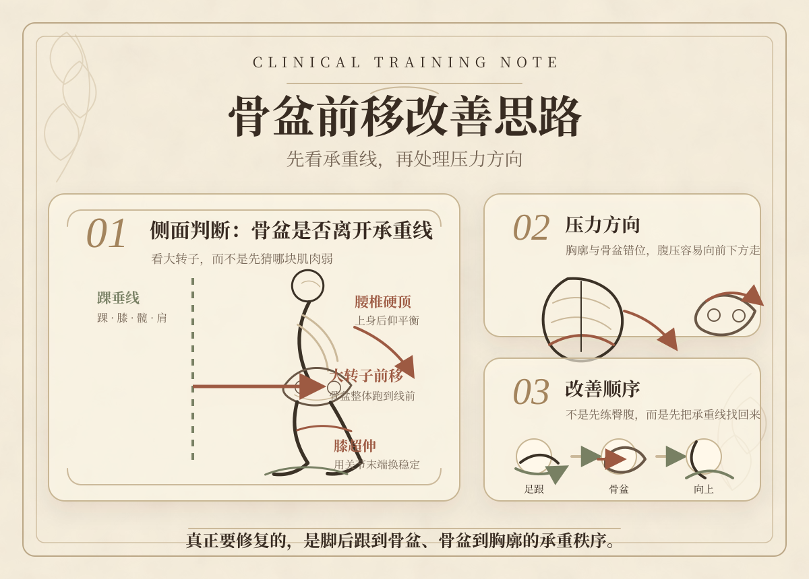

1定义要分开
骨盆前倾是角度问题，骨盆前移是位置问题。很多客户两者会同时存在，但教学时必须分开讲。
如果混在一起，方案很容易变成夹臀、卷腹、压肋骨，却没有解决承重线。
课后知识文件 02
这份文件给已经学过课程的学员复盘使用。骨盆前移不是简单的“骨盆前倾”，而是骨盆整体跑到身体承重线前方，身体用膝超伸、腰椎硬顶、上身后仰来维持不倒。

01 · 课程定位
它不是面向普通客户的浅科普，而是给学完课程的人复盘。目标是让学员在面对客户时知道： 先看什么、再判断什么、最后按什么顺序安排训练。
骨盆前倾是角度问题，骨盆前移是位置问题。很多客户两者会同时存在，但教学时必须分开讲。
如果混在一起，方案很容易变成夹臀、卷腹、压肋骨，却没有解决承重线。
骨盆往前不是局部骨盆自己出了问题，而是矢状面前后重心转换能力下降。
脚后跟承重不足时，身体就会把稳定交给膝盖和腰椎。
向下影响足踝、膝盖、髋关节排列；向上影响胸廓位置、腹内压分布和小腹形态。
所以它常常和悬垂腹、腰酸、膝超伸、下蹲受限一起出现。
骨盆前移的本质，是身体把支撑丢给了关节，而不是用系统向上托住。
给客户解释时，不要急着说“你核心弱”或“你臀弱”。更准确的说法是：你的身体现在不是没有力，而是支撑路线不对。
当重心长期落在前方，膝盖和腰会帮你顶住身体，小腹和骨盆就很难回到该有的位置。
02 · 评估路径
学员评估骨盆前移时，一定先从侧面垂线开始。不要先摸哪里紧，不要先判断哪块肌肉弱。先确认身体是否还站在自己的承重线上。
重点看髂骨、耻骨、腰曲形成的角度。它可能导致腰曲加大，但不一定代表骨盆整体跑到承重线前方。
重点看大转子是否跑到踝垂线前方。它通常会带着膝超伸、腰椎硬顶、上身后仰或胸廓塌陷一起出现。
03 · 底层逻辑
学员最容易把骨盆前移说成“臀弱、腹弱、髂腰肌紧”。这些可能存在，但不是第一层逻辑。第一层逻辑是：身体没有在矢状面把承重线管理好。
骨盆前移的人，站立时常常像压在前脚掌上。脚后跟没有稳定承重，身体就缺少从地面向上的支撑。
没有脚后跟，骨盆很难真正回到身体下面。
膝盖超伸和腰椎硬顶，本质是用关节末端位置换稳定感。
看起来人站住了，但身体不是弹性向上，而是卡在关节上。
胸廓和骨盆错位后，腹内压很难均匀分布。压力容易推向腹部前侧、小腹、下背和盆底。
这也是它常常伴随小腹突出、悬垂腹或下背压力大的原因。
更好的话术是：你的身体现在不是单独哪块肌肉没力，而是支撑路线不对。我们先把重心放回脚后跟和中线，让骨盆回到身体下面，再训练肌肉，效果会更稳定。
04 · 训练优先级
这里讲的是方案思路，不细化到具体动作。真正带客户时，你可以根据评估选择动作，但顺序尽量不要倒过来。
如果足背屈受限、下蹲脚跟容易翘，身体很难把重心安全放回脚后跟。这时先处理足踝灵活性和下肢螺旋排列，比直接练腹更重要。
让客户感受到脚后跟向下踩，身体从地面被向上托。这一步不是让人后仰，而是让骨盆有机会回到踝上方的承重线。
骨盆不是靠夹屁股拉回来，而是在脚后跟承重、膝盖解锁、下腹上提的共同作用下回线。口令可以是“尾骨向下沉，腹股沟打开，身体往上长”。
让吸气进入后腰、侧腰、下腹；呼气时耻骨方向轻轻向上提。目标是腹腔重新成为圆筒，而不是上腹硬夹、腰椎硬顶。
最后一定要回到站、蹲、走、拿东西。如果垫上会收，一站起来还是骨盆前顶和膝超伸，说明模式还没有真正进入日常功能。
05 · 答疑框架
课程学员真正需要的不是一句“练核心”，而是一套能把问题讲清楚的语言。下面四句话可以直接变成你的答疑框架。
骨盆前移不是骨盆单独歪了，而是骨盆整体跑到了身体承重线前面。
身体为了不倒下，会用膝盖锁死、腰椎硬顶、上身后仰来维持平衡。
我们不是先拼命练腹练臀，而是先把脚后跟承重和骨盆位置找回来。
当承重线恢复，小腹更容易向上托住，腰和膝盖也不需要一直代偿。
足踝容量、脚后跟承重、膝盖解锁、骨盆回线、腹内压重新分布，再整合到站立功能。
只练臀桥、只做卷腹、用力夹屁股、强行收肚子、让客户一直挺胸站直，却没有处理承重线。
06 · 学生要记住
骨盆前移的改善，不是把某一块肌肉练强，而是让身体重新学会从脚后跟到骨盆、从骨盆到小腹、从小腹到胸廓的整体向上支撑。
骨盆前移不是局部骨盆问题，而是身体失去了矢状面上的承重线。